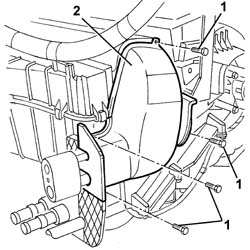
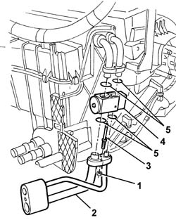
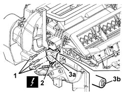
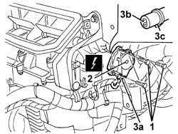
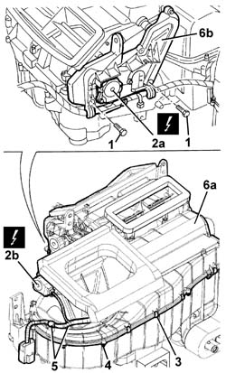
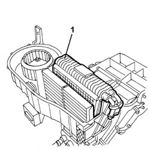
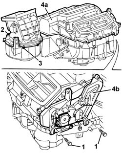
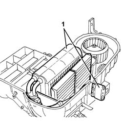
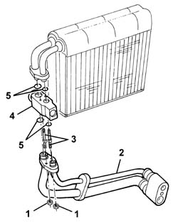

5040C66 AIR CONDITIONER EVAPORATOR - R+R WITH AIR CONDITIONER BOX REMOVED
- Path
- Procedures > 50 AUXILIARY UNITS > 5040 AIR CONDITIONING CASING AND COMPONENTS > 5040C AIR CONDITIONER BOX AND COMPONENTS > 5040C66 AIR CONDITIONER EVAPORATOR - R+R WITH AIR CONDITIONER BOX REMOVED
- Kind
- repair procedure (removal / refitting; the operation number is the code)
- Applies to
- engines: 2.0 JTS, 3.2 V6, 1.9 JTD 16V; all production periods
- Interactive page
- https://sloeber94.github.io/elrnDB-aGt/en/#/125001545
Applies to: engines: 2.0 JTS, 3.2 V6, 1.9 JTD 16V; all production periods
 Removing
Removing
 Refitting
Refitting1. Undo the bolts fixing the shield for the expansion valve.
2. Remove the shield.

Applies to: engines: 2.0 JTS, 3.2 V6, 1.9 JTD 16V; all production periods
1. Unscrew the nuts.
2. Remove the pipe connector.
3. Undo the bolts.
4. Remove the expansion valve.
5. Recover the gaskets (do not reuse the gaskets when refitting).

Applies to: engines: 2.0 JTS, 3.2 V6, 1.9 JTD 16V; all production periods
1. Undo the bolts fixing the left air mixture flap control motor.
2. Disconnect the motor electrical connection
Name | Connector | |
|---|---|---|
2 | Left air mixture flap actuator | See N78 LEFT AIR MIXTURE FLAP ACTUATOR ( CONNECTORS ) |
3. Remove the motor (3a) releasing its intake (3b).

Applies to: engines: 2.0 JTS, 3.2 V6, 1.9 JTD 16V; all production periods
1. Undo the bolts fixing the right air mixture flap control motor.
2. Disconnect the motor electrical connection
Name | Connector | |
|---|---|---|
2 | Right air mixture flap actuator | See N79 RIGHT AIR MIXTURE FLAP ACTUATOR |
3. Remove the motor (3a) releasing the intake (3b) and the cam (3c).

Applies to: engines: 2.0 JTS, 3.2 V6, 1.9 JTD 16V; all production periods
1. Undo the lower bolts fixing the protection for the cam and levers.
2. Disconnect the electrical connections for the motors (2a, 2b).
Name | Connector | |
|---|---|---|
2a | Air distribution actuator | See N80 AIR DISTRIBUTION FLAP ACTUATOR (MOTOR) |
Name | Connector | |
|---|---|---|
2b | Air intake actuator | See N82 OUTSIDE / RECIRCULATION AIR INTAKE FLAP ACTUATOR |
3. Release the upper cover retaining springs.
4. Undo the bolts fixing the upper cover.
5. Disconnect the wiring from the upper cover.
6. Remove the upper cover (6a) releasing the protection (6b) from the cam underneath.

Applies to: engines: 2.0 JTS, 3.2 V6, 1.9 JTD 16V; all production periods
1. Remove the evaporator.

Applies to: engines: 2.0 JTS, 3.2 V6, 1.9 JTD 16V; all production periods
Refitting
RemovingCheck that the evaporator is intact, that there are no leaks and that there is no damage or deposits of dirt on the finned surface.
Fit the evaporator in position.
Place the upper cover in position and secure it using the bolts and the retaining springs.
Connect the wiring to the upper cover.
Connect the electrical connections for the motors.
Tighten the lower bolts fixing the protection for the cam and lever.
Position the right air mixture motor engaging the intake and the cam.
Tighten the bolts fixing the motor.
Connect the motor electrical connection.
Position the left air mixture motor engaging the intake.
Tighten the bolts fixing the motor.
Connect the motor electrical connection.
Position the new gaskets on the expansion valve, then secure it using the bolts.
Position the pipe connector and secure it using the nuts.
Position the shield and fix it using the bolts
Applies to: engines: 2.0 JTS, 3.2 V6, 1.9 JTD 16V; all production periods; only with equipment: Right hand drive
Removing
RefittingOp. 5040D90 AIR CONDITIONER SYSTEM WIRING BUNDLE - R R
Op. 5040D86 AIR CONDITIONER RIGHT HAND AIR MIXER FLAP CONTROL MOTOR - R R
1. Undo the lower bolts fixing the protection for the cam and levers.
2. Release the upper cover retaining springs.
3. Undo the bolts fixing the upper cover.
4. Remove the upper cover (4a), releasing the protection (4b) from the cam underneath.

Applies to: engines: 2.0 JTS, 3.2 V6, 1.9 JTD 16V; all production periods; only with equipment: Right hand drive
1. Remove the evaporator complete with expansion valve and pipes.

Applies to: engines: 2.0 JTS, 3.2 V6, 1.9 JTD 16V; all production periods; only with equipment: Right hand drive
1. Working at the bench, undo the nuts.
2. Remove the pipe connector.
3. Undo the bolts.
4. Remove the expansion valve.
5. Recover the gaskets.

Applies to: engines: 2.0 JTS, 3.2 V6, 1.9 JTD 16V; all production periods; only with equipment: Right hand drive
Refitting
RemovingCheck that the expansion valve is not damaged.
Fit the new gaskets on the expansion valve and secure it with the bolts.
Position the pipe connector and secure it using the nuts.
Fit the evaporator complete with expansion valve and pipes.
Place the upper cover in position and secure it using the bolts and the retaining springs.
Tighten the lower bolts fixing the protection for the cam and lever.
Op. 5040D86 AIR CONDITIONER RIGHT HAND AIR MIXER FLAP CONTROL MOTOR - R R
Topics linked from this page (2)
- 5040D86 AIR CONDITIONER RIGHT HAND AIR MIXER FLAP CONTROL MOTOR - R R
- 5040D90 AIR CONDITIONER SYSTEM WIRING BUNDLE - R R